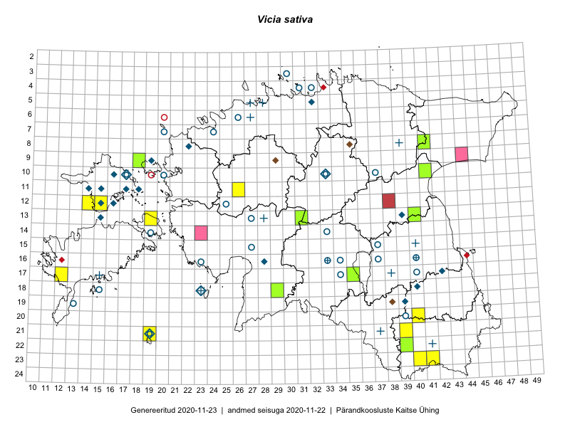

Vicia sativa
Uuendatud: 2016-12-08
Kaardile koondatud taksonid: Vicia sativa L.

Kaart põhineb 12 vaatlusel. Taime on leitud 11 ruudust.
| Ruut | Vaatleja(d) | Vaatlusaeg | Kirje tüüp | Viide andmebaasikirjele |
|---|---|---|---|---|
| 18-40 | Malle Leht | 2015-07-27 | ruut/ala | vaata PlutoFis |
| 12-14 | Eeva-Maria Jeletsky, Tarmo Niitla | 2015-06-25 | ruut/ala | vaata PlutoFis |
| 12-15 | Eeva-Maria Jeletsky, Tarmo Niitla | 2015-06-25 | ruut/ala | vaata PlutoFis |
| 21-39 | Eeva-Maria Jeletsky, Tarmo Niitla | 2015-07-26 | ruut/ala | vaata PlutoFis |
| 23-40 | Eeva-Maria Jeletsky, Tarmo Niitla | 2015-08-05 | ruut/ala | vaata PlutoFis |
| 23-41 | Eeva-Maria Jeletsky, Tarmo Niitla | 2015-08-03 | ruut/ala | vaata PlutoFis |
| 17-12 | Mari Reitalu, Triin Reitalu | 2015-07-22 | ruut/ala | vaata PlutoFis |
| 13-19 | Kadri Tali | 2015-10-05 | ruut/ala | vaata PlutoFis |
| 11-26 | Hanna-Eliisa Luts, Tõnu Ploompuu | 2015-07-28 | ruut/ala | vaata PlutoFis |
| 21-19 | Silvia Pihu | 2015-07-01 | ruut/ala | vaata PlutoFis |
| 12-14 | Toomas Kukk, Meeli Mesipuu | 2016-08-10 | ruut/ala | vaata PlutoFis |
| 17-35 | Meeli Mesipuu, Toivo Sepp, Susanna Vain | 2016-07-20 | ruut/ala | vaata PlutoFis |